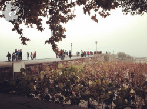
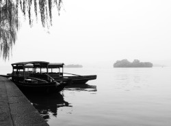
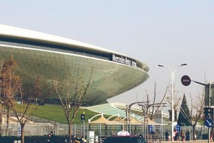

计划景点
周六：
- 南京路步行街 - 豫园 - 老城隍庙 - 上海老街
- 东方明珠 - 外滩观光隧道 - 外滩十八号 - 外白渡桥


周日：
西湖 - 雷峰塔

周一：
千岛湖

周二：
世博馆

Day1 ： 4月17号（星期五）
注意事项：
- 身份证必须反复检查带好，没有身份证带户口本。
- 尽量轻装，一件秋衣外套，3套内衣，3套体恤即可。
- 成人建议都背包，小孩都不背包。可以携带平板等设备，平板也可以提前下载电影，游戏等，供小孩等待时娱乐 。
- 放松心情，不要紧张。
- 小孩特别注意不要吵闹，注意文明，注意安全。
- 手机等设备注意充满电，机场和飞机都不提供充电。
- 注意饮食，不要闹肚子和过度饮水。
- 行李不要托运。
20:00 （晚上8点）家里集合
21:00 （晚上9点）汇合二姐家里出发向机场
22:00 （最迟晚上10点）到达福成机场
- 在柜台办理登机手续
- 拿到登机牌牌后即可乘坐左侧电梯上2楼，过安检（需要出示身份证或者户口本，和登机牌，另外香烟，打火机和饮料，液体类都需要在安检前丢掉，特别注意不可携带刀具或特殊金属制品）
- 安检通过，内部就是候机厅，有4个登机口，注意看自己登机牌中部位置，会提示具体在哪个登机口，然后在登机口附近等候上机。
- 飞机只会晚点，不会提前，耐心等待到10点55分，根据指示登机，需要出示登机牌，不需要出示身份证。
注意事项：
- 过安检后，候机厅内部有饮料可购买，还有一家面馆，有厕所。
- 飞机型号是（HO1176，吉祥航空 ，HO 是英文 不是H零 ） ，务必注意听广播，注意是否飞机晚点，注意自己的登机口，不要走错。
- 小孩必须时刻在成人的视野内。
- 成人务必注意妥善保管所有身份证，户口本和登机牌。
22:55 起飞 （HO1176，吉祥航空）
- 根据登机牌的座位号寻找到自己的座位，坐下。
- 行李物品可以安放在头部的柜子，也可以放在自己前方座椅的底部，座椅前有注意事项，安全相关的小本子，当行李安放好注意及时阅读。掌握基本相关常识。
- 在飞机快要起飞前，空乘人员会在过道，根据常规，演讲一边关于飞机安全，和自救急救的问题，一定要注意听，注意看他们关于安全垫，氧气面罩的使用演示。结束后再看看座椅前方的小本子，上面都有写。
- 飞机起飞前关闭手机和平板。系好安全垫。
- 飞机加速起飞的时候，身体会有失重感，不要惊慌，更不能大声吵闹，一定要保持冷静，靠近窗外的小孩不要激动。成人务必注意看管小孩，时刻提醒。飞机在达到一定速度后，耳朵会胀疼，感觉就好像什么也听不到了，千万不要紧张，尝试不断张大闭合嘴巴，带动脸部肌肉调整耳朵，一会就过去，如果没能马上恢复，感觉听东西还是不清楚，没关系，多试几次或者等等下飞机就行，不会造成身体的影响
- 飞机在上升到一定高度的时候可能会剧烈晃动，不要紧张，因为可能遇到了气流，就是风大，飞机很安全的。注意听广播，听空乘人员的提醒。大概半个小时后，飞机就会飞到高空，然后就会很平稳了。
- 因为飞机是中型机，空间比较狭窄，不要随便走动，厕所在飞机尾部，需要等飞机飞到高空才可以去，广播会提醒，任何问题都可以及时呼叫空姐。
- 飞机在中途会提供饮料和饭，免费的，可以试试，味道还可以。小孩注意不要吃太多，防止胃不适，肚子不舒服。
- 3个小时旅途会略长，刚开始可能会很兴奋。起飞的时候，可能会感觉到紧张，飞行中越到气流，会感到害怕，飞机稳定后长期狭窄的空间坐着，会感到疲劳甚至反胃。这些都是很正常的表现，睡一觉或者和周围聊聊天时间很快就会过去。放松心情，美好的旅程马上就开始了。
注意事项：
- 有任何问题及时联系空乘人员，让他们帮助完成。
- 千万不可吵闹大声喧哗，或者随意走动，任何事情即使寻求空乘人员帮助。
- 务必随时保持冷静，注意广播。
Day2 ： 4月18号（星期六）
1:45 到达上海浦东机场（T2航站楼）
- 注意带好行李，看好小孩，下机后上海的气温会比北海低，提前准备一件秋衣，下机后穿上。
- 打开手机接收我的信息。
- 下机后根据指示牌或者询问人，速度寻找到出站口，因为要赶大巴，时间有半个小时。因为上海机场非常大，可能需要走20多分钟，路程接近家里走到和安那么远，所以，不用怀疑，你们没有走错，就顺着登机出口的主干大路，一直走，主题头部的出口提示，跟着提示走，有任何问题及时问路边的人。
2:10 机场出口和我汇合
2:30 机场大巴出发
3:10 到达，延安西路华山路(静安寺)
诸君，恭喜你们成功达到魔都！晚安
9:30 起床
10:00 出发南京路 （路边早餐）
11:30 - 12:45 午餐（耶里夏丽 新疆菜）
12:45 - 2:30 下一家旅馆安放行李 ，南京步行街，小吃街
2:30 - 5：00 城隍庙 豫院
5:00 外滩 ->轮渡至陆家嘴
5:30 晚餐（待定）
7:00 - 9:00 外滩
9:00 -> 轮渡回南京路
Day3 ： 4月19号（星期日）
10:33 到达上海虹桥
11:40 到达 杭州站
- 住宿地
- 外婆家 （午饭）
- 西湖
- 雷峰塔
Day4 ： 4月20号（星期一）
- 千岛湖
18:28 到达 杭州站
19:45 到达 上海虹桥
Day5 ： 4月21号（星期二）
10:30 到达上海中国馆
13:00 出发浦东机场
14:00 到达上海浦东
17:55 到达北海福成机场站